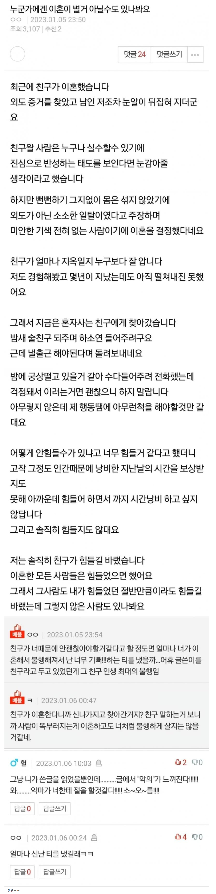

누군가에겐 이혼이 별거 아닐수도 있나봐요
댓글
과거일을 끊임없이 반추하며 일어나지 않을 미래를 걱정하는게 보통사람들인데
일부 사림들은 기억은 하되 반추는 끊어내고 오지 않은 미래에 대한 걱정도 거의 안함. 마음수련이 된 사람일건데 대단해 보이더라..
친구가 오히려 손절한 셈인데
쉬운주제로 악의를 숨기려고 글을 어렵게 쓰는군요. 80점 드리겠습니다
여자들이 안쳐맞아서 그런가
진짜 욕한마디 안하고 개쳐패고 싶게하는 구타유발을 ㅈㄴ잘함
그리고 거기서 못참고 아 씨발 해버리면 눈돌아서
뭐 씨?너 욕했냐 이지랄떨면서 피해자코스프레까지 덤
그래서
딱 저 글쓴년같은 년들은 걍 얼굴안보는게 나음 뭐라 지랄해봐야 내머리만아픔 나는 너를 위했다느니 위로해주려 신경쓴거라느니 피해자코스프레할거라
공감합니다
이혼한 사람이 덜 힘들었으면 좋겠다도 아니고 이먼 글쓴 새끼가 또라이인가 ㅋㅋㅋ
얼마나 신난 티를 냈길래 << 이게 딱일듯
자기가 이혼해서 자격지심 엄청난데 마침 친구도 이혼했다하니 엄청나게 신난 티를 냈나보네
존나 신낫네 개년이 ㅋㅋ
내가 글을 잘못읽었나 위로하러간 친구도 이혼했다는 소리 아냐??
글쓴이도 이혼했고 힘들었는데
이혼하고도 힘들어하지않는 친구를보며
'나(글쓴이)도 힘든만큼, 전남편도 힘들겠지' 했던게 아닐수도 있겠다
라는거 같은데..
인간은 본인이 힘든일을 타인이 공감을 못하면
내가 아픈만큼 똑같이 힘들길 바라는 습성이 있다
가까운 친구일수록 성공을 바라지 않는 경향도 있다
크게 드러내냐 안드러내냐의 차이지
근대 나와 공감을 바랬을 수 있긴하지.
근대 상대는 존나 대인배인거였고.
옆에서 3D 안경 쓰고 팝콘 튀기고 지랄을 했나보구만ㅋㅋㅋ
그냥 이혼이란 이슈 자체를 즐거워하는 인간들이 있음
근데 그런 애들은 그런 기색을 안 숨기더라
그걸한게 아니어도 외되가 될 수 있구나. 정서적 외도인가
여자애 무슨 마음인진 알겠음. 신난 것도 있겠지만, 내가 약해서 내 인생이 망가진게 아니라 '다들 이렇게 무너지는게 맞잖아!'를 확인하고 싶었을듯
사람마다 감정은 다른거니까
놀랍게도 저 개년에게 공감하는 미친년들이 댓글에 보인다는거 ㅋㅋㅋㅋ
ㅋㅋ 미친년
마지막 문단은 왜 쓴거래 위선을 떨거면 끝까지 떨지
고딩어 백반 그새끼 생각나네